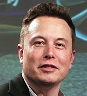
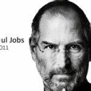

WIKEPEDIA
WIKEPEDIA
L’entrepreneuriat recouvre les activités qui concourent à la formation et la croissance d'une entreprise,
dont la conséquence première
est la création de valeur (richesse, emploi). Cela peut aussi concerner des
formes d'organisation sans but lucratif,
par exemple dans l'entrepreneuriat social. Les formes
d’entrepreneuriat varient selon le type d’organisation qui est mis en place.
la Tunisie est classée 62ème pays au monde pour lancer une entreprise, selon l’indice mondial de l’entrepreneuriatqui classe 132 pays de la planète en fonction de la santé de leurs écosystèmes entrepreneuriaux, qui a été publié en novembre 2015 par le Global Entrepreneurship and Development Institute (GEDI)
Nos jeunes ont des idées. Pour vous en convaincre, rien de mieux que d´assister à l´un ou l´autre pitch à l´occasion de concours entrepreneuriaux : vous seriez étonnés de la richesse des idées qui y sont brassées. Faut-il rappeler que c´est un étudiant qui est à l´origine de Facebook? À l´échelle nationale, citons le succès de plateformes web telles que Storify, ClickYourCar, BePark ou Djengo par exemple, toutes nées de l´imagination d´étudiants belges.

Il existe trois niveaux du SNEE :
L’inscription à l’appel à candidatures se fait sur www.4c.tn et en cas d’accord du SNEE, une charte est signée par toutes les parties prenantes.
Cofinancé par le programme Erasmus+ de l’Union Européenne, le projet SALEEM est mis en œuvre par un consortium de 14 partenaires de 5 pays (Maroc, Tunisie, France, Belgique, Roumanie). L’AUF coordonne le projet et en assure la gestion technique, administrative et financière.
| jeff bezos | mark zuckerberg | Bill Gates | Elon Musk | Steve Jobs | oprah Winfrey |
|---|---|---|---|---|---|
|  |  | ||||
|
|
|
|
|
|